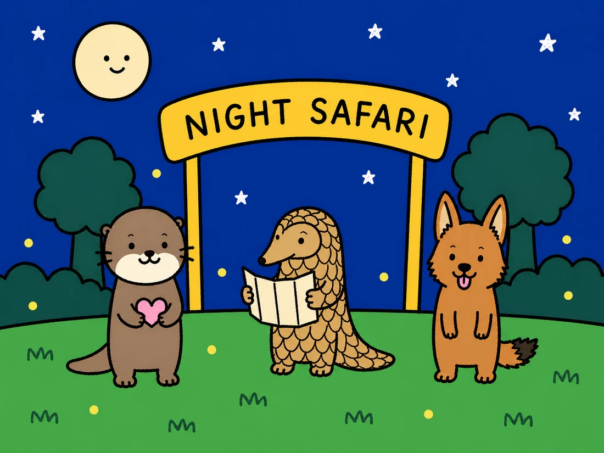

Before you go
Everything worth knowing about Saturday, in one place. Nothing here needs doing tonight.
Tickets are handled. That part is my job.
- 🚪Gates open 6pm. The trails and the tram do not start until 7pm, so the first hour is entrance plaza, shops and food only.
- 🚋Tram at 7pm sharp. It is free, unlimited, and about 30 minutes. Ride it first. Between 8 and 10pm the queue reportedly runs 45 to 90 minutes.
- 🎭Creatures of the Night runs at 7.30, 8.30 and 9.30pm. Seats are reserved through the Mandai booking portal, which opens exactly two hours before each show. Be there 20 minutes early, because the gates shut 10 minutes before it starts.
- 🔥Embers of Night fire show in the entrance courtyard, 9pm and 10pm on Saturdays. No booking needed.
- 🌙Park closes at midnight, last entry 11.15pm. A relaxed full visit takes about three and a half to four hours.
It is up in Mandai, so budget about an hour from town whichever way we go.
- 🚇Train and shuttle. North South line to Khatib, then the Mandai Khatib Shuttle for two dollars fifty. It runs every 15 minutes and takes about 20 minutes. Roughly 60 to 75 minutes door to door from the city.
- 🚌Bus 138 from Ang Mo Kio or Springleaf, about 15 minutes from Ang Mo Kio.
- 🚕Grab. Around 30 to 40 minutes and roughly thirty to forty dollars from town, more with surge.
- ⏰The last shuttle back to Khatib leaves at midnight exactly, which is also when the park closes. Tight.
- 🍜Bus 138 runs until 00:18 and goes down Upper Thomson, which happens to be where the good supper is. Springleaf Prata Place is open until 4am on Saturdays. Ming Fa Fishball Noodles is open all night.
- 📱If we Grab, book it before walking to the stand. Everybody leaves at once at closing.
- 🦟Repellent before you leave home. It is forest, it is humid, and dusk is peak mosquito. I could not confirm they sell it inside.
- 👟Closed shoes with grip. The trails are paved but dim and often damp.
- 👕Light long sleeves beat the mosquitoes without cooking you. Expect 26 to 28 degrees and over 80 percent humidity after dark.
- 🌧️A thin poncho, not an umbrella. September gets short evening showers. The park stays open, the tram keeps running, and the amphitheatre is fully sheltered, so rain is not a write-off.
- 💧A water bottle. There are refill stations marked on the park map.
No flash, no torches. This one is properly enforced, because it distresses the animals. Turn the flash off before we go in. Night mode on a phone is the way.
Everything is dark on purpose. Photos will be blurry. That is fine and honestly part of the fun. The bingo card has a square for exactly this.
Asian small-clawed otters, Malayan tigers, Sunda pangolins, slow lorises, fishing cats, binturongs, Malayan tapirs, striped hyenas, Asian elephants, flying squirrels, leopard cats, fruit bats, and a family of dholes.
No giraffes, whatever the internet says.